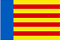

<header>
    <nav class="navbar navbar-expand-lg navbar-dark">
        <div class="container-fluid">
            <a class="navbar-brand" routerLink="/home-cast" routerLinkActive="active"></a>
            <button class="navbar-toggler" type="button" data-bs-toggle="collapse" data-bs-target="#navbarScroll"
                aria-controls="navbarScroll" aria-expanded="false" aria-label="Toggle navigation">
                <span class="navbar-toggler-icon"></span>
            </button>
            <div class="collapse navbar-collapse" id="navbarScroll">
                <ul class="navbar-nav me-auto my-2 my-lg-0 navbar-nav-scroll" style="--bs-scroll-height: 100px;">
                    <li class="nav-item dropdown">
                        <a class="nav-link dropdown-toggle" href="#" id="navbarScrollingDropdown" role="button"
                            data-bs-toggle="dropdown" aria-expanded="false">
                            L'Associació
                        </a>
                        <ul class="dropdown-menu" aria-labelledby="navbarScrollingDropdown">
                            <li><a class="dropdown-item" href="#">Nuestra historia</a></li>
                            <li><a class="dropdown-item" routerLink="/organizacion"
                                    routerLinkActive="active">Organización</a></li>
                        </ul>
                    </li>
                    <li class="nav-item dropdown">
                        <a class="nav-link dropdown-toggle" href="#" id="navbarScrollingDropdown" role="button"
                            data-bs-toggle="dropdown" aria-expanded="false">
                            Secciones
                        </a>
                        <ul class="dropdown-menu" aria-labelledby="navbarScrollingDropdown">
                            <li><a class="dropdown-item" routerLink="/castores-cast" routerLinkActive="active">Jóvenes
                                    Castores</a></li>
                            <li><a class="dropdown-item" routerLink="/manada-cast" routerLinkActive="active">Manada</a>
                            </li>
                            <li><a class="dropdown-item" routerLink="/tropa-cast" routerLinkActive="active">Tropa</a>
                            </li>
                            <li><a class="dropdown-item" routerLink="/esculta-cast"
                                    routerLinkActive="active">Esculta</a></li>
                            <li><a class="dropdown-item" routerLink="/clan-cast" routerLinkActive="active">Clan</a></li>
                            <li><a class="dropdown-item" routerLink="/scouters-cast"
                                    routerLinkActive="active">Scouters</a></li>
                        </ul>
                    </li>
                    <li class="nav-item dropdown">
                        <a class="nav-link dropdown-toggle" href="#" id="navbarScrollingDropdown" role="button"
                            data-bs-toggle="dropdown" aria-expanded="false">
                            Multimedia
                        </a>
                        <ul class="dropdown-menu" aria-labelledby="navbarScrollingDropdown">
                            <li><a class="dropdown-item" routerLink="/fotos" routerLinkActive="active">Fotos</a></li>
                            <li><a class="dropdown-item" routerLink="/videos" routerLinkActive="active">Videos</a></li>
                            <li><a class="dropdown-item" routerLink="/audios" routerLinkActive="active">Audios </a></li>
                        </ul>
                    </li>
                    <li class="nav-item">
                        <a class="nav-link" routerLink="/publicacions" routerLinkActive="active">Publicaciones</a>
                    </li>
                    <li class="nav-item dropdown">
                        <a class="nav-link dropdown-toggle" href="#" id="navbarScrollingDropdown" role="button"
                            data-bs-toggle="dropdown" aria-expanded="false">
                            L'escoltisme
                        </a>
                        <ul class="dropdown-menu" aria-labelledby="navbarScrollingDropdown">
                            <li><a class="dropdown-item" routerLink="/badenpowell-cast">Baden Powell</a></li>
                            <li><a class="dropdown-item" routerLink="/cronologia-cast">Historia</a></li>
                            <li><a class="dropdown-item" href="/santjordi-cast">San Jordi</a></li>
                        </ul>
                    </li>
                    <li class="nav-item">
                        <a class="nav-link" routerLink="/calendario" routerLinkActive="active">Calendario de
                            actividades</a>
                    </li>
                    <li class="nav-item">
                        <a class="nav-link" routerLink="/contacto-cast" routerLinkActive="active">Contacto</a>
                    </li>
                    @if(rol === 'admin'){
                    <li class="nav-item">
                        <a class="nav-link" routerLink="/admin" routerLinkActive="active">Panel Admin</a>
                    </li>
                    }
                </ul>
                @if(rol == ""){
                <a routerLink="/login" routerLinkActive="active"></a>
                }@else{
                <button (click)="logout()">Logout</button>
                }
                <a routerLink="/home" routerLinkActive="active"></a>
            </div>
        </div>
    </nav>
</header>